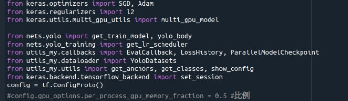
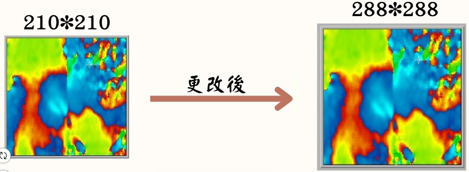
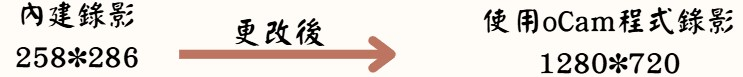
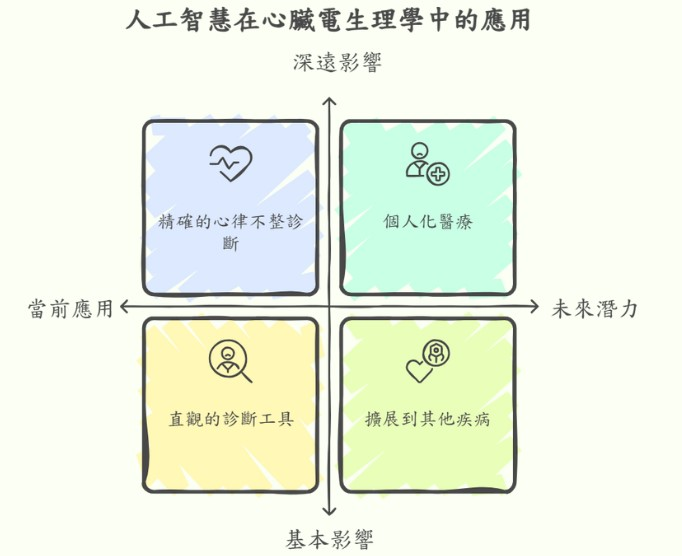
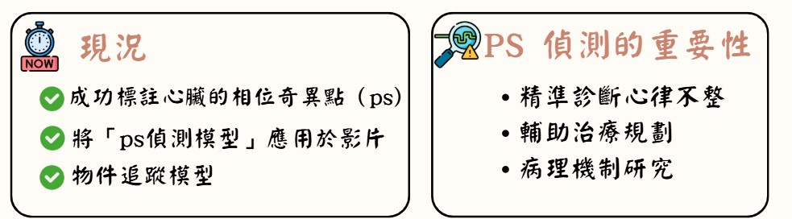

問題與挑戰
1.GPU經常爆滿(加入會依需求分配記憶體之指令)

2.圖片像素過低

訓練過程會將像素統一至288*288
3.預測效能低
採用人工標註可能會出現錯誤或遺漏等問題，後續我們將藉由數學模型或影片預測的結果，對初步標註框進行自動調整，再由人工進行最後確認。
4.圖片訓練異常
統一圖片大小後與原始標註資料不一致，我們所擷取的phase map圖片大小尺寸不一, 經過處理後圖片大小統一為288*288畫素, 但我們是對原來尺寸不一的圖片進行標註, 因而標註資料與統一大小後的圖片不一致, 結果造成模型訓練失敗. 經過處理後, 我們成功訓練出偵測PS的AI模型.
5.影片畫質過低

結論


本專題利用物件偵測模型YOLOv7、YOLOv8以及物件追蹤模型DeepSORT，讓我們能夠快速且準確地從phase map圖片以及影片中標註出相位奇異點並進行後續的追蹤，這對心律不整的診斷、電燒治療規劃和病理機制研究都有很大的幫助。
研究過程中，我們解決了圖片尺寸不一致、標註資料格式混亂等問題，並透過資料分割和數據增強技術提升模型的學習效果。我們目前的結果透過模型預測影片觀察，效果還不錯，可自動標示出心臟的相位奇異點，並進行後續的物件追蹤，雖然目前模型評估後的效能還有改進空間，但主要由於當初標註的答案有所疏漏，未來修正標注資料後相信我們的模型效能會非常好。
|